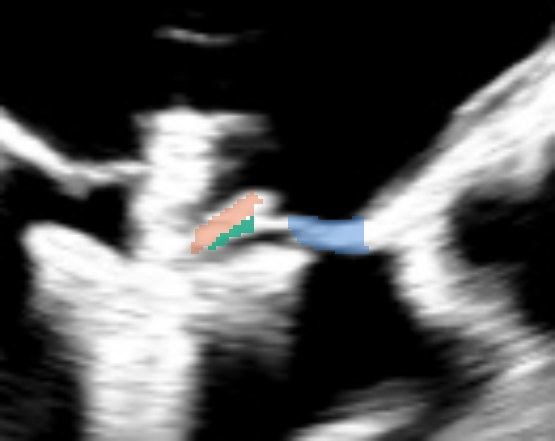
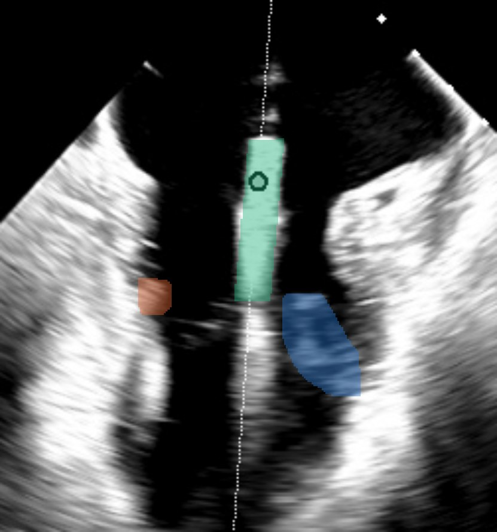
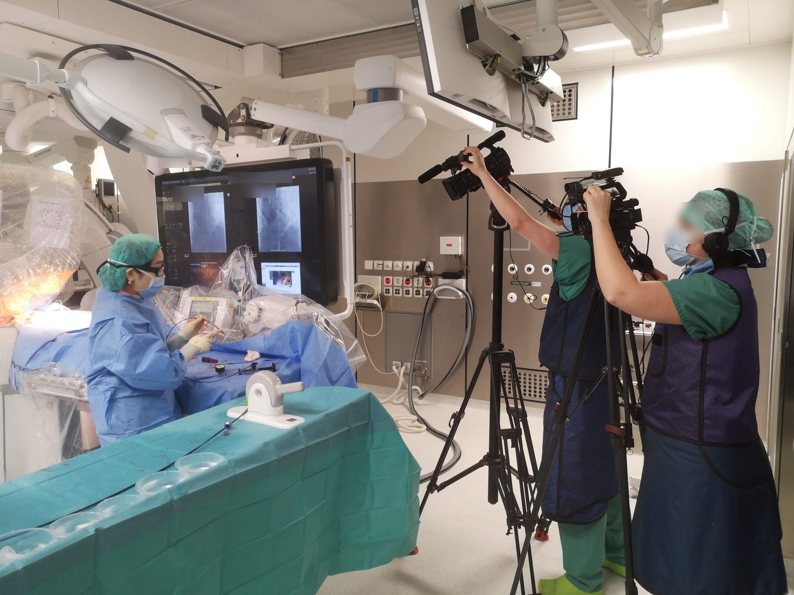

Real-time AI guidance for heart valve clipping. 心脏瓣膜夹合手术的实时 AI 导航。
In transcatheter edge-to-edge repair the operator works entirely through a live ultrasound image. AutoClip reads that image, maps the valve and the clip on every frame, and gives the operator a number for each decision. Starting with mitral TEER; built to extend across structural heart intervention. 经导管缘对缘修复（TEER）中，术者完全依靠一幅实时超声图像操作。AutoClip 读懂这幅图像，在每一帧上画出瓣膜与夹子，并为每一个决策给出一个数字。从二尖瓣 TEER 起步，架构可扩展到整个结构性心脏介入。
Real intra-procedural biplane TEE, replayed offline. Colours are AutoClip's segmentation of leaflets, grippers and clip on every frame. Not a mock-up. 真实术中双平面 TEE，离线回放。彩色区域为 AutoClip 在每一帧上对瓣叶、抓钳与夹子的分割。不是示意图。
Every TEER decision is made by eye.TEER 的每一个决策都靠肉眼。
Where to clip, how deep to grasp, when to release: on today's screen there is not a single number. The knowledge that turns a grey image into those decisions lives inside the heads of a few experienced operators. That is why the learning curve is long, why results vary between operators, and why most hospitals cannot start. 夹在哪里、抓多深、何时释放：今天的屏幕上没有一个数字。把灰白图像变成这些决策的知识，只存在于少数资深术者的脑子里。这就是学习曲线长、术者之间结果不一、多数医院开展不了的原因。
numbers on the operator's screen during a clip procedure today.今天的夹合手术中，术者屏幕上的数字个数。
disagreement between four experts on where the medial papillary muscle is, independent of image quality. We measured it before training anything.四位专家对内侧乳头肌位置的分歧，与图像质量无关。我们在训练任何模型之前先测了这个数。
patients treated with mitral clips worldwide, still the fastest-growing structural heart procedure.全球二尖瓣夹合治疗患者数，仍是增长最快的结构心手术。
We taught software to see what the operator sees.我们教软件看懂术者看到的东西。
It runs on the ultrasound machine's video output. Nothing changes in the workflow, any clip, any echo vendor.接超声机的视频输出。工作流不变，任何夹子、任何超声厂商都适用。
See看见
Fifteen structures on every frame of intraoperative TEE: leaflet scallops, grippers, insertion points, papillary muscles, and the clip itself.在术中 TEE 的每一帧上分割十五个结构：瓣叶分区、抓钳、插入点、乳头肌和夹子本身。
Measure测量
A TEER procedure comes down to three decisions. AutoClip gives a number for each, computed on recorded procedures today.一台 TEER 归结为三个决策。AutoClip 为每个决策给出一个数字，今天已在回放病例上运行。
- AIs the clip in the right place?夹子位置对吗？Position on the papillary-muscle axis乳头肌轴上的内外侧位置
- BShould the grippers drop?该放抓钳了吗？Insertion of both leaflets两侧瓣叶的插入
- CShould we release?可以释放了吗？Grasped leaflet length, both sides两侧夹持瓣叶长度
Guide导航
The same model on the live video feed of the echo machine, in the room, during the procedure. External validation at two centers. The operator still decides; the screen finally shows a number.同一个模型接到超声机的实时视频流，在手术室里、手术中运行。两个中心外部验证。决定权仍在术者，屏幕上终于有了数字。
A number where there was a guess.原来靠猜的地方，现在有一个数字。
Two of the three readouts, drawn on real frames from recorded procedures. Not mock-ups.三个读数中的两个，画在真实回放病例的帧上。不是示意图。


Working prototype, built on data no one else has.可运行的原型，建立在别人没有的数据上。
Progress进展
- ~2,000 TEER procedures from four centers in Europe and China.来自欧洲与中国四个中心的约 2,000 例 TEER。
Intraoperative TEE under data-use authorization. Chinese and international data are kept in separate pipelines for NMPA and FDA/CE.术中 TEE，经各中心授权使用。中国与国际数据分管线保存，分别面向 NMPA 与 FDA/CE。
- 235 patients annotated, ~10,000 labelled frames.已标注 235 例，约 10,000 帧。
Under a written annotation protocol with a four-annotator inter-observer study, so the model is measured against a known expert ceiling.按书面标注规程执行，并做了四标注者一致性研究，模型对标的是已知的专家天花板。
- 15-class segmentation and two clinical readouts running on recorded procedures.15 类分割与两个临床读数已在回放病例上运行。
Trained on multi-center data; readouts computed at native resolution with per-study pixel calibration.多中心数据训练；读数在原生分辨率下、按每例像素标定计算。
- An outcome-linked cohort of 203 intra-procedural TEE studies.203 例术中 TEE 的结局关联队列。
Registry-grade procedural and follow-up data, so every readout can be tested against what happened to the patient a year later.登记库级别的手术与随访数据，每个读数都能对照患者一年后的真实结局来检验。
Recognition认可
- Featured Innovation, TCT 2025, San Francisco.TCT 2025（旧金山）Featured Innovation。
Selected for the main stage of the largest interventional cardiology meeting while still a prototype.仍是原型时即入选全球最大介入心脏病学会议的主舞台。
- Founder on faculty at TCT, EuroPCR and PCR London Valves.创始人为 TCT、EuroPCR、PCR London Valves 讲者。
The three meetings where structural heart practice is set.结构性心脏病领域定调的三个会议。
- Research prototype. Not yet in clinical use.研究原型，尚未进入临床使用。
No regulatory clearance has been sought or granted. We say so on every page.尚未申请或获得任何监管许可。每一页都写明。
Hard to copy, by design.从设计上就难以复制。
- Procedural data术中数据Intraoperative TEE from real clip procedures is rare and never leaves the hospital without an operator who is trusted there.真实夹合手术的术中 TEE 很稀缺，没有医院信任的术者，数据根本出不来。
- Expert ground truth专家级标注Labels defined by interventionalists, with the expert ceiling measured first, so we know what "correct" means.标签由介入医生定义，先测出专家天花板，才知道「正确」是什么。
- Procedural ontology术式本体Not just anatomy: anatomy, device, phase and their interaction, written down as the three decisions of the procedure.不只是解剖：解剖、器械、阶段及其相互关系，被写成手术的三个决策。
- Outcome link结局关联A registry that tells us which readouts predict the result a year later. Readouts that predict become thresholds; thresholds become guideline language.登记库告诉我们哪些读数能预测一年后的结果。能预测的成为阈值，阈值写进指南。
- Workflow fit工作流适配Designed in the cath lab by someone who stands there. Video in, numbers on screen, nothing else to touch.由站在导管室里的人设计。视频进、数字出，其他什么都不用动。
Built from inside the cath lab.从导管室里面长出来的公司。

Mi performs the procedure AutoClip guides. She built the first version because, after years at the table, she still had no number to point to when a trainee asked "is this a good grasp?"AutoClip 导航的手术，就是 Mi 自己做的手术。她做第一版的原因很简单：在台上做了这么多年，当学员问「这一夹抓得好吗」，她依然指不出一个数字。
- Interventional cardiologist, TEER and TAVI operator. 1,700+ structural heart procedures as operator and team member.介入心脏病医生，TEER 与 TAVI 术者。主刀与参与结构性心脏手术共 1,700+ 例。
- Trained as a cardiac surgeon at Fuwai Hospital, Beijing. Structural heart fellow at Klinik Hirslanden Zürich. Licensed physician in China.北京阜外医院心脏外科训练。苏黎世 Hirslanden 医院结构性心脏病 Fellow。中国执业医师。
- Faculty at TCT, EuroPCR and PCR London Valves.TCT、EuroPCR、PCR London Valves 讲者。
Starting with mitral TEER.从二尖瓣 TEER 起步。
Every catheter procedure on the heart is guided by the same kind of image and runs into the same kind of decisions. The perception layer, the readouts and the outcome link are the same architecture; what changes is the procedural ontology.每一种经导管心脏手术都靠同一类影像引导，遇到同一类决策。感知层、读数、结局关联是同一套架构，变的只是术式本体。
- Mitral TEER二尖瓣 TEERAutoClip. Now.AutoClip。现在。
- Tricuspid TEER三尖瓣 TEERSame device, same imaging, new anatomy.同样的器械和影像，新的解剖。
- TAVI and redo-TAVITAVI 与再次 TAVIValve-in-valve positioning and coronary access.瓣中瓣定位与冠脉通路。
- Other ultrasound-guided structural procedures其他超声引导的结构心手术One perception layer for the whole lab.整个导管室共用一个感知层。
The heart–machine interface.心脏与机器之间的接口。
Today a cardiac intervention depends on one person reading several imaging streams at once and turning them into action in their head. Turicor is building the intelligence layer that connects the images, the anatomy, the device and the decision, in real time.今天的心脏介入，靠一个人同时读几路影像，在脑子里把它们变成动作。Turicor 在做的是一层实时的智能：把影像、解剖、器械和决策连起来。
Operators, imaging teams, device makers and investors: talk to us.术者、影像团队、器械厂商与投资人：联系我们。
We are looking for validation partners for the live-feed version, and for people who want to build it with us in the Bay Area.我们正在寻找实时版本的验证合作伙伴，以及愿意在湾区一起把它做出来的人。